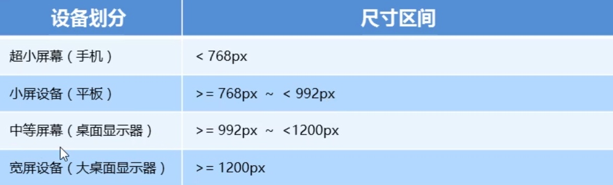

响应式布局
1. 响应式开发
1.1 响应式开发原理
响应式开发原理就是使用媒体查询针对不同宽度的设备进行布局和样式的设置，从而达到适配不同设备的目的

1.2 响应式布局容器
响应式需要一个父级作为容器，来配合子级元素来实现变化效果
原理就是在不同屏幕下，通过媒体查询来改变这个布局容器的大小，再改变里面子元素的排列方式和大小，从而实现不同屏幕下看到不同的页面布局和样式变化
- 超小屏幕下（<768px）container设为width：100%；
- 小屏幕下（>768px）container设为width：750px
- 中等屏幕下（>992px）container设为width：970px
- 超大屏幕下（>1200px）container设为width：1170px
案例:响应式导航栏
- 导航栏
- 导航栏
- 导航栏
- 导航栏
- 导航栏
- 导航栏
- 导航栏
- 导航栏
2. Bootstrap前端开发框架
2.1 Bootstrap使用
- 创建文件夹结构：新建一个bootstrap文件夹
- 创建HTML骨架结构
- 引入相关样式文件
- 书写内容
2.2 布局容器
Bootstrap需要为页面内容和栅格系统包裹一个.container容器，Boostrap预先定义好了这个类，它提供了两个做此作用的类.container和container-fluid
3. Bootstrap栅格系统
栅格系统是指将页面布局划分为等宽的列，然后通过列数的定义来模块化页面布局
Bootstrap提供了一套响应式，移动设备优先的流式栅格系统，随着屏幕或视口尺寸的增加，系统会自动分为最多12列
4. 阿里百秀首页案例